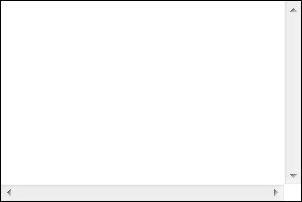

BT3013: 只有 IE 可以设置滚动条样式
作者：武利剑
标准参考
无
问题描述
IE 中通过一系列独有的滚动条样式特性自定义滚动条的各种效果。其他浏览器均不支持，滚动条始终为系统皮肤默认的样式。
造成的影响
此问题只影响滚动条的视觉效果，并不会影响页面布局。
受影响的浏览器
| IE6 IE7 IE8 |
|---|
问题分析
IE5 及以后的 IE 版本支持一些非标准的 CSS 特性去设置页面上滚动条的样式。这些样式都是以 scrollbar-* 开头。在 MSDN 中，它们被当作 IE 对 CSS 的扩展。
以下是对此类样式的说明：
| 滚动条样式 | 支持情况 | 支持浏览器版本 | 可否继承 | 描述 |
|---|---|---|---|---|
| ‘scrollbar-3dlight-color’ | IE 特有 | IE5.5+ | Y | 设置滚动框的和滚动条箭头左上边缘的颜色 |
| ‘scrollbar-highlight-color‘ | IE 特有 | IE5.5+ | Y | 设置滚动框的和滚动条箭头左上边缘的颜色 |
| ’scrollbar-face-color’ | IE 特有 | IE5.5+ | Y | 设置滚动框和滚动条箭头的颜色 |
| ’scrollbar-arrow-color‘ | IE 特有 | IE5.5+ | Y | 设置滚动条箭头的颜色 |
| ’scrollbar-shadow-color‘ | IE 特有 | IE5.5+ | Y | 设置滚动框的和滚动条箭头右下边缘的颜色 |
| ‘scrollbar-dark-shadow-color’ | IE 特有 | IE5.5+ | Y | 设置滚动条槽的颜色 |
| ‘scrollbar-base-color’ | IE 特有 | IE5.5+ | Y | 设置滚动条主要构成部分的颜色 |
| ’scrollbar-track-color‘ | IE 特有 | IE5.5+ | Y | 设置滚动条轨迹组成部分的颜色 |
上述这些 CSS 特性是 IE 独有特性。其他浏览器不支持。
更多参见 MSDN：Extensions to CSS
如以下测试代码：
<style>
.scrollbar_color {
scrollbar-arrow-color: red;
scrollbar-base-color: gold;
scrollbar-dark-shadow-color: #00ffff;
scrollbar-track-color: #cc66ff;
scrollbar-face-color: pink;
scrollbar-shadow-color: #009999;
scrollbar-highlight-color: blue;
scrollbar-3d-light-color: yellow;
}
</style>
<div class="scrollbar_color" style="overflow:scroll; height:200px; width:300px; border:1px solid black;">
<br/> <br/> <br/> <br/> <br/> <br/> <br/>
</div>
在各浏览器下的截图：
| IE6 IE7 IE8 | Firefox Chrome Safari Opera |
|---|---|
 |
 |
解决方案
尽量不要去修改滚动条的样式。以免造成 IE 跟其他浏览器之间的差异。
参见
知识库
相关问题
测试环境
| 操作系统版本: | Windows 7 Ultimate build 7600 |
|---|---|
| 浏览器版本: |
IE6 IE7 IE8 Firefox 3.6 Chrome 4.0.302.3 dev Safari 4.0.4 Opera 10.51 |
| 测试页面: | scrollbar_style.html |
| 本文更新时间: | 2010-07-02 |
关键字
scrollbar style IE 滚动条 样式